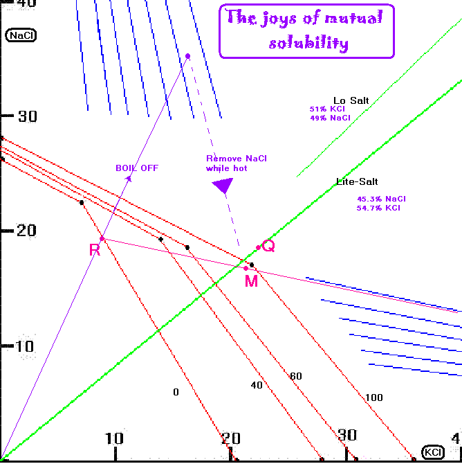

Seperation of NaCl and KCl
Seperation of NaCl and KCl is easy to explain but not too easy to do in the garage. It's alot of
bother and a PITB. It will require lots of working with hot liquids and filtering and generally
messing around. If you have to work with mixtures of Na and K salts it is easier to seperate them
at the Chlorate stage where K Chlorate is not very soluble and will come out of solution in large
quantities and leave Sodium ions behind.
Note: Concentrated solutions of salts will boil at a temperature above 100°C. Be careful
as these solutions will burn badly!! Get yourself a weighing scales, thermometer, filters, heaters,
suitable containers, a suitable space and time.
'Lo-Salt' is 49% NaCl and 51% KCl AFAIK.
'Lite-Salt' is 29 parts NaCl to 35 parts KCl, thats 45.3% and 54.7% (ignoring and other small amounts of stuff in there).
Take an slight excess of Lite-Salt (about 66 grams, use 70 grams to be sure)
and dissolve all that will dissolve in 100ml water at 100°C to make a solution
saturated with both NaCl and KCl. If using Lo-Salt use about 85 grams. Don't let any water escape!
Add some to keep the weight of the system the same if any is escaping. It will unless you have some
sort of condenser on your container (you won't, so it will be escaping!).

We will have a system represented by point Q. Filter or decant
this hot solution. This will get rid of any insoluble matter together with the excess
KCl and NaCl on the bottom.
To this hot (100°C) solution add a few ml hot water to make sure no NaCl will
come out of solution as you are very near the NaCl 'field'. The hot solution is represented
by the black dot on the knee of the 100°C curve.
This is a system containing 22% KCl, 17% NaCl and 61% water. That's 100
grams water + 36 grams KCl + 27.9 grams NaCl = 164 grams total weight in system.
Add a few ml hot water. By adding
a few ml hot water (keeping all at 100°C so that no NaCl will drop out before you make
the addition) we will have a system represented by point M.
Then cool (slowly to get big crystals) to zero. It is important that you do not let any
water evaporate out as you cool. You could go down to -10°C or so to get more KCl
out but I have no data for below zero.
According to the mutual solubility diagram you will get around
13.3% of the total system weight coming out of solution if you go to zero. Thats around 22 grams of
pure KCl as you are in the pure KCl field through out the cooling time.
At this stage you remove the KCl and you are left with a solution that is 142 grams in weight.
Perhaps at this stage you can take your KCl and run.
You can now start boiling off water down to a weight in the region of 82 grams
(60 grams boiled off) about 42% of system weight. FILTER HOT (@100°C) and then add a few ml of hot water.
The hot liquid you now have is in the region of the starting point
Cool and some more KCl will come out.
It may be much more convienent to work at 80°C instead of boiling as it can be
to operate at 100. Not impossible to handle by any means but accidents can happen.
You can get stuck into Mutual Solubilities here and here.
HIT THE BACK BUTTON ON YOUR BROWSER
BACK TO TOP